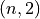

User guide: ToolsPyqtgraph¶
See Window display for details about window creation.
Basic 2D plot¶
Here is an example for basic 2D plot:
from visiannot.tools.ToolsPyQt import createWindow, infiniteLoopDisplay
from visiannot.tools import ToolsPyqtgraph
import numpy as np
###################
# data generation #
###################
data_1 = np.array([7, 7, 7, 8, 8, 10, 5, 6, 5, 9, 9, 7])
data_2 = np.array([
[-2, 5], [0, 5], [0.5, 5.5], [2, 3], [2.3, 2.8],
[4, 0], [6, -2.3], [8.5, -1], [10, 2]
])
###########
# display #
###########
app = ToolsPyqtgraph.initializeDisplayAndBgColor()
# create window
win, lay = createWindow()
# add widget
wid = ToolsPyqtgraph.create2DWidget(lay, (0, 0))
# add plot
ToolsPyqtgraph.addPlotTo2DWidget(wid, data_1)
ToolsPyqtgraph.addPlotTo2DWidget(
wid, data_2,
plot_style={'pen': {'color': 'm', 'width': 2},
'symbol': 'o', 'symbolPen': 'r', 'symbolBrush': 'r'}
)
infiniteLoopDisplay(app)
which renders the window as shown below.
Fig. 33 Example of plot¶
The function initializeDisplayAndBgColor() calls the function ToolsPyQt.initializeDisplay() and sets the background color to white by default (otherwise Pyqtgraph sets the background color to black). After having creating the window and the layout, we create the 2D widget for plotting, as an instance of pyqtgraph.PlotWidget. Then, we add plots to this widget. Data can be stored in two ways, either in a 1D numpy array or in a 2D numpy array. In the first case, the value on the X axis is the array index. In the second case, the shape is  where each line corresponds to one point with X/Y coordinates. The keyword argument plot_style allows to change the plot style. By default it is a blue line.
ToolsPyqtgraph provides the function basic2DPlot() that gathers the three steps. The following code is equivalent to above:
app = ToolsPyqtgraph.initializeDisplayAndBgColor()
win, _, wid, _ = ToolsPyqtgraph.basic2DPlot(data_1)
ToolsPyqtgraph.addPlotTo2DWidget(
wid, data_2,
plot_style={'pen': {'color': 'm', 'width': 2},
'symbol': 'o', 'symbolPen': 'r', 'symbolBrush': 'r'}
)
infiniteLoopDisplay(app)
Grid¶
In order to display the grids on the widget, we need to add the following lines after having created the widget:
# Y axis grid
left_axis = wid.getAxis("left")
left_axis.setGrid(255)
# X axis grid
bottom_axis = wid.getAxis("bottom")
bottom_axis.setGrid(255)
This renders the following window.
Fig. 34 Example of plot with grids¶
Legend¶
Taking the same example, here is how to add a legend:
from visiannot.tools.ToolsPyQt import createWindow, infiniteLoopDisplay
from visiannot.tools import ToolsPyqtgraph
import numpy as np
###################
# data generation #
###################
data_1 = np.array([7, 7, 7, 8, 8, 10, 5, 6, 5, 9, 9, 7])
data_2 = np.array([
[-2, 5], [0, 5], [0.5, 5.5], [2, 3], [2.3, 2.8],
[4, 0], [6, -2.3], [8.5, -1], [10, 2]
])
###########
# display #
###########
app = ToolsPyqtgraph.initializeDisplayAndBgColor()
# create window
win, lay = createWindow(size=(800, 500))
# add widget
wid = ToolsPyqtgraph.create2DWidget(lay, (0, 0))
# add plot
plot_1 = ToolsPyqtgraph.addPlotTo2DWidget(wid, data_1)
plot_2 = ToolsPyqtgraph.addPlotTo2DWidget(
wid, data_2,
plot_style={'pen': {'color': 'm', 'width': 2},
'symbol': 'o', 'symbolPen': 'r', 'symbolBrush': 'r'}
)
# add legend
legend_dict = {"Plot 1": plot_1, "Plot 2": plot_2}
ToolsPyqtgraph.addLegendTo2DWidget(wid, legend_dict, offset=(50, 80))
infiniteLoopDisplay(app)
which renders the window as shown below.
Fig. 35 Example of basic 2D plot with legend¶
By default, the legend is inside the widget at the bottom right corner. With the keyword argument offset we can change this position inside the widget. It also possible to put the legend in a separate widget with the following line: ToolsPyqtgraph.addLegendTo2DWidget(wid, legend_dict, position='right', legend_wid_size=(50, 0)). It renders the following window.
Fig. 36 Example of plot with legend¶
Customization of axes¶
It is possible to customize the aspect of the ticks and ticks text of the axes. First, in the function create2DWidget(), the keyword argument axes_label_dict allows to choose which axes to show and to associate a label. Second, the function setTicksTextStyle() allows to change the color of the axis ticks, ticks text and label. Here is an example:
from visiannot.tools.ToolsPyQt import createWindow, infiniteLoopDisplay
from visiannot.tools import ToolsPyqtgraph
import numpy as np
###################
# data generation #
###################
data_1 = np.array([7, 7, 7, 8, 8, 10, 5, 6, 5, 9, 9, 7])
###########
# display #
###########
app = ToolsPyqtgraph.initializeDisplayAndBgColor()
# create window
win, lay = createWindow(size=(800, 500))
# add widget
wid = ToolsPyqtgraph.create2DWidget(
lay, (0, 0), widget_title="Simple plot",
title_style={'color': '#0000', 'size': '16pt'},
axes_label_dict={"left": ["Voltage (V)", None],
"bottom": ["Time (s)", {"color": "#90A", "font-size": "14pt"}]}
)
# add plot
ToolsPyqtgraph.addPlotTo2DWidget(wid, data_1)
# set ticks on X axis
x_ticks_list = [[(i, i * 2 + 3) for i in range(len(data_1))]]
bottom_axis = wid.getAxis("bottom")
bottom_axis.setTicks(x_ticks_list)
infiniteLoopDisplay(app)
which renders the window as shown below.
Fig. 37 Example of basic 2D plot with custom axes¶
We have also used the keyword arguments widget_title and title_style in the function create2DWidget() in order to add a title to the widget. The default color for the axes is grey. We defined a custom color for the label of the X axis. In order to change the aspect of the bottom axis, we add the following line before the infinite loop:
ToolsPyqtgraph.setTicksTextStyle(bottom_axis, color='r', size=14, offset=4)
It renders the following window. We note that it overwrites the color of the bottom axis label.
Fig. 38 Example of plot with custom axes¶
Scatter plot and text item¶
Here is an example of a scatter plot with a text item associated to each point:
from visiannot.tools.ToolsPyQt import createWindow, infiniteLoopDisplay
from visiannot.tools import ToolsPyqtgraph
import numpy as np
###################
# data generation #
###################
data = np.array([
[-2, 5], [0, 5], [0.5, 5.5], [2, 3], [2.3, 2.8],
[4, 0], [6, -2.3], [8.5, -1], [10, 2]
])
text_list = ["A", "B", "C", "D", "E", "F", "G", "H", "I"]
###########
# display #
###########
app = ToolsPyqtgraph.initializeDisplayAndBgColor()
# create window
win, lay = createWindow(size=(800, 500))
# add widget
wid = ToolsPyqtgraph.create2DWidget(lay, (0, 0))
# add plot
ToolsPyqtgraph.addPlotTo2DWidget(
wid, data,
plot_style={'pen': None, "symbol": 's', "symbolPen": 'r', "symbolBrush": 'r'}
)
# loop on text list
for i, text in enumerate(text_list):
# get text item position
pos = data[i]
# add text item
ToolsPyqtgraph.addTextItemTo2DWidget(wid, pos, text=text, anchor=(0, 0))
infiniteLoopDisplay(app)
which renders the window as shown below.
Fig. 39 Example of scatter plot with text items¶
Plot with mean/std¶
Let assume that we retrieve the temporal evolution of a value for each subject of a dataset. The function addMeanStdPlotTo2DWidget() allows to display the temporal evolution of the mean and standard deviation along the subjects. Here is an example:
from visiannot.tools.ToolsPyQt import createWindow, infiniteLoopDisplay
from visiannot.tools import ToolsPyqtgraph
import numpy as np
###################
# data generation #
###################
# data array
# shape n_samples x n_subjects
data_array_1 = np.random.rand(10, 150)
data_array_2 = np.random.rand(15, 50) + 0.5
# data mean
data_mean = np.concatenate((
data_array_1.mean(axis=1),
data_array_2.mean(axis=1)
))
data_std = np.concatenate((
data_array_1.std(axis=1),
data_array_2.std(axis=1)
))
# list with the number of subjects at each sample
n_population_list = [data_array_1.shape[1] for i in range(data_array_1.shape[0])] + \
[data_array_2.shape[1] for i in range(data_array_2.shape[0])]
###########
# display #
###########
app = ToolsPyqtgraph.initializeDisplayAndBgColor()
# create window
win, lay = createWindow(size=(800, 500))
# add widget
wid = ToolsPyqtgraph.create2DWidget(lay, (0, 0))
# add mean/std plot
ToolsPyqtgraph.addMeanStdPlotTo2DWidget(
wid, data_mean, data_std, n_population_list=n_population_list
)
infiniteLoopDisplay(app)
which renders the window as shown below.
Fig. 40 Example of plot with mean/std¶
The dataset is composed of 150 subjects. The first 10 samples are defined as data_array_1 = np.random.rand(10, 150), all the subjects are present. The following 15 samples are defined as data_array_2 = np.random.rand(15, 50) + 0.5, only 50 subjects are present. The keyword argument n_population_list allows to display a text item at each sample with the number of subjects.
Animated plot¶
It is possible to update the content of the widget in a for loop in order to get an animated plot. In this case, we need to add the line app.processEvents() at the end of the for loop. Here is an example:
from visiannot.tools.ToolsPyQt import createWindow, infiniteLoopDisplay
from visiannot.tools import ToolsPyqtgraph
import numpy as np
from time import sleep
###################
# data generation #
###################
# shape n_trials x n_samples
data_array = np.random.rand(10, 150)
###########
# display #
###########
app = ToolsPyqtgraph.initializeDisplayAndBgColor()
# create window
win, lay = createWindow(size=(800, 500))
# add widget
wid = ToolsPyqtgraph.create2DWidget(lay, (0, 0))
# loop on trials
for data in data_array:
ToolsPyqtgraph.addPlotTo2DWidget(wid, data, flag_clear=True)
sleep(1)
app.processEvents()
infiniteLoopDisplay(app)
We define 10 arrays to be plotted sequentially. With the function sleep, we force a pause of 1 second between each array to plot. The keyword argument flag_clear is set to True so that the previous plot is removed at each update.
It is also possible to use callback management in order to control the animation with keyboard interaction, as in the following example:
from visiannot.tools.ToolsPyQt import createWindow, infiniteLoopDisplay
from visiannot.tools import ToolsPyqtgraph
import numpy as np
from PyQt5 import QtCore
####################
# class definition #
####################
class animatedWindow():
def __init__(self, data_array):
# input attribute
self.data_array = data_array
# initialize index of trial
self.trial_id = 0
self.app = ToolsPyqtgraph.initializeDisplayAndBgColor()
# create window
self.win, self.lay = createWindow(size=(800, 500))
# add widget
self.pattern_title = "Trial %d"
widget_title = self.pattern_title % self.trial_id
self.wid = ToolsPyqtgraph.create2DWidget(
self.lay, (0, 0), widget_title=widget_title
)
# initialize plot
self.plot = ToolsPyqtgraph.addPlotTo2DWidget(
self.wid, self.data_array[self.trial_id]
)
# listen to callback
self.win.keyPressEvent = self.keyPress
infiniteLoopDisplay(self.app)
def keyPress(self, ev):
key = ev.key()
# backward
if key == QtCore.Qt.Key_Left:
if self.trial_id > 0:
self.trial_id -= 1
# forward
elif key == QtCore.Qt.Key_Right:
if self.trial_id < self.data_array.shape[0] - 1:
self.trial_id += 1
# update plot
self.wid.setTitle(self.pattern_title % self.trial_id)
self.plot.setData(self.data_array[self.trial_id])
######################
# script starts here #
######################
# shape n_trials x n_samples
data_array = np.random.rand(10, 150)
# create window
w = animatedWindow(data_array)
We define a class animatedWindow which takes the data array as input. The attribute self.trial_id is the current index of the displayed trial. The key press signal is connected to the method keyPress where the attribute self.trial_id and the plot are updated. If the left key is pressed, then we go to the previous trial. If the right key is pressed, then we go to the next trial. The plot update is performed by the method setData of the instance of pyqtgraph.PlotWidget returned by the function addPlotTo2DWidget().
Mouse click interaction¶
Callback management can be used to define a user interaction with mouse click, as in the following example:
from visiannot.tools.ToolsPyQt import createWindow, infiniteLoopDisplay
from visiannot.tools import ToolsPyqtgraph
import numpy as np
from pyqtgraph import LinearRegionItem
######################
# callback functions #
######################
def mouseClicked(ev, wid):
pos = wid.getViewBox().mapToView(ev.pos())
pos_x = pos.x()
pos_y = pos.y()
print(pos_x, pos_y)
def regionDragged(region, plot, data_array):
# get zoom bounds
ind_0 = int(region.getRegion()[0])
ind_1 = int(region.getRegion()[1])
# update plot
plot.setData(data_array[ind_0:ind_1])
###################
# data generation #
###################
# shape n_trials x n_samples
data_array = np.random.rand(150)
###########
# display #
###########
app = ToolsPyqtgraph.initializeDisplayAndBgColor()
# create window
win, lay = createWindow(size=(800, 800))
# add widget with full signal
wid_1 = ToolsPyqtgraph.create2DWidget(lay, (0, 0))
# initialize plot
ToolsPyqtgraph.addPlotTo2DWidget(wid_1, data_array)
# plot region
region = LinearRegionItem(
values=(0, data_array.shape[0] - 1),
bounds=(0, data_array.shape[0] - 1)
)
wid_1.addItem(region)
# add widget with zoomed signal
wid_2 = ToolsPyqtgraph.create2DWidget(lay, (1, 0))
# initialize plot
ind_0 = int(region.getRegion()[0])
ind_1 = int(region.getRegion()[1])
plot_2 = ToolsPyqtgraph.addPlotTo2DWidget(wid_2, data_array[ind_0:ind_1 + 1])
# listen to callback for mouse click
callback_lambda_1 = lambda x: mouseClicked(x, wid_1)
wid_1.scene().sigMouseClicked.connect(callback_lambda_1)
# listen to callback for region dragging
callback_lambda_2 = lambda x: regionDragged(x, plot_2, data_array)
region.sigRegionChanged.connect(callback_lambda_2)
infiniteLoopDisplay(app)
which renders a window as shown below.
Fig. 41 Example of mouse interaction¶
When the user click on the first widget, the mouse position is printed in the console. We listen to the signal sigMouseClicked of the scene attribute of the widget and connect it to the callback function mouseClicked. The first positional argument ev is an instance of QtGui.QMouseEvent emitted when the mouse is clicked. The coordinates returned by ev.pos() are expressed in pixels offset relatively to the top left corner. In order to get the coordinates relatively to the widget axes, we need the widget: wid.getViewBox().mapToView(ev.pos()). In order to pass the widget as an additional argument to the callback function, we use lambda.
When the user drags the blue region in the first widget, it updates the zoomed signal in the second widget. We listen to the signal sigRegionChanged and connect it to the callback function regionDragged. Once again, we need to pass additional arguments to the callback function: the plot item to update and the data array.
Image display¶
In the following example, a random black & white image is displayed:
from visiannot.tools.ToolsPyQt import createWindow, infiniteLoopDisplay
from visiannot.tools import ToolsPyqtgraph
import numpy as np
###################
# data generation #
###################
# random black & white image
im_array = np.random.rand(150, 150)
###########
# display #
###########
app = ToolsPyqtgraph.initializeDisplayAndBgColor()
# create window
win, lay = createWindow(size=(800, 800))
# add widget with image
ToolsPyqtgraph.createWidgetImage(lay, (0, 0), im=im_array)
infiniteLoopDisplay(app)
Mouse interaction is enabled in order to zoom and navigate in the image. If we need to disable this behavior, we can use the function createWidgetLogo() instead of createWidgetImage().
The function basicImagePlot() is also provided for convenience. The two lines for creating the window and the widget are equivalent to this line: win, _, _, _ = ToolsPyqtgraph.basicImagePlot(im_array, size=(800, 800)).
Color map¶
Here is an example of a color map along with a color bar:
from visiannot.tools.ToolsPyQt import createWindow, infiniteLoopDisplay
from visiannot.tools import ToolsPyqtgraph
import numpy as np
###################
# data generation #
###################
# random black & white image (RGB)
im_array = np.tile(np.random.rand(150, 150)[:, :, None], (1, 1, 3)) * 255
###########
# display #
###########
app = ToolsPyqtgraph.initializeDisplayAndBgColor()
# create window with image
win, lay, wid, _ = ToolsPyqtgraph.basicImagePlot(im_array, size=(800, 800))
# create color map
color_map, lut = ToolsPyqtgraph.createColorMap(
[-5, 5],
[(0, 0, 0), (255, 255, 255)]
)
# create color bar
ToolsPyqtgraph.createWidgetColorBar(lay, (0, 1), color_map, lut, [-5, 0, 5])
infiniteLoopDisplay(app)
which renders the window as shown below.
Fig. 42 Example of color map¶